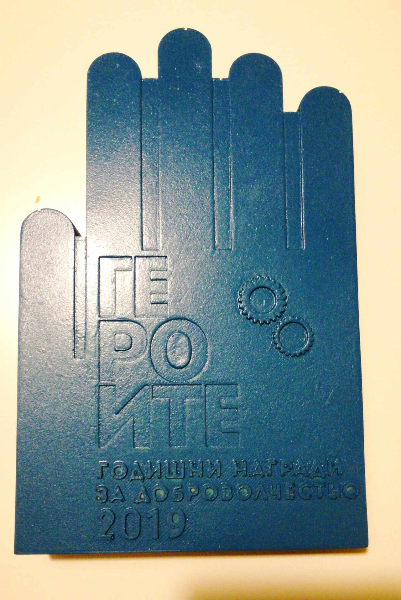

Фондация „Ела и ти“
Всичко започна през 2017 г. със силното ми желание да изведа хората с увреждания извън до болка познатите им четири стени. Да им отворя вратата към един различен, вълнуващ, понякога дори екстремен свят. Към места, които изглеждат недостижими и които дори с помощта на близките си те трудно биха могли да посетят.
Първото ни предизвикателство беше пещера. После дойдоха планините, върховете, труднодостъпните пътеки. Днес вече сме и на спортните състезания – от градските бягания до тежките планински трасета. И всичко това единствено с човешка физическа сила. Без двигатели. Без механизирана помощ. С много хъс, доверие, взаимна подкрепа и неизчерпаемо желание за приключения.
Така израсна „Ела и ти“ – общност от хора с и без увреждания, които споделят не само пътя, но и емоциите, победите и приятелствата. А със „Заедно в града“ пренесохме тази общност и в ежедневието – защото всеки заслужава да бъде част от живота извън дома си.
Когато някой каже „Невъзможно!“, ние отговаряме: „Не, възможно е!“
Отчети
2025
2024

Призът „Героите“
През 2019 година заедно с екипите на „Пещерно спасяване“ и „Планинско спасяване – Пазарджик“, спечелихме приза за смел подход ГЕРОИТЕ в годишните награди за доброволчество на TimeHeroes.